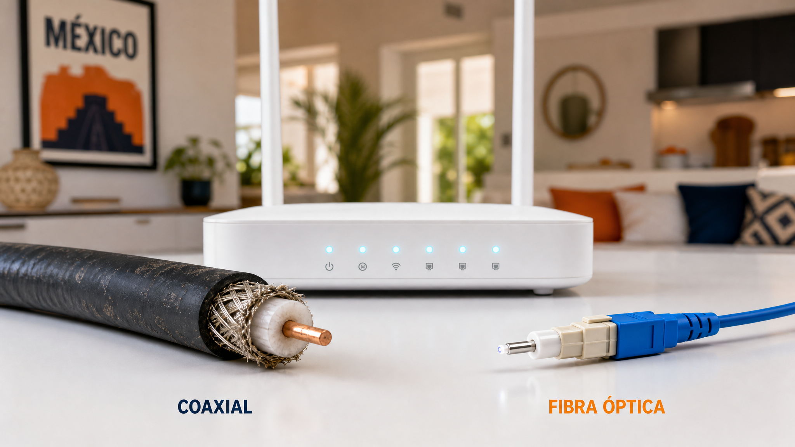

Cable coaxial vs fibra óptica: ¿Cuál es la mejor opción para tu hogar en México?
Si alguna vez has sentido la frustración de que tu película favorita se detenga justo en el momento más emocionante, o si tu conexión se vuelve lenta cuando todos en casa intentan conectarse al mismo tiempo, es probable que estés enfrentando las limitaciones de tu tecnología actual. Al buscar un nuevo plan de internet, te habrás topado con una duda técnica pero crucial: cable coaxial vs fibra óptica. Entender la diferencia entre estas dos tecnologías es el primer paso para asegurar que tu hogar cuente con la velocidad y estabilidad que la vida digital moderna exige.
En este artículo, desglosaremos de manera sencilla y práctica todo lo que necesitas saber para tomar la mejor decisión para tu familia y tu bolsillo, analizando no solo la velocidad, sino también la estabilidad y el costo en el contexto del mercado mexicano.
El cable coaxial: La tecnología que nos acompañó por décadas
Para entender la comparativa, primero debemos conocer al "viejo conocido". El cable coaxial es un tipo de cable compuesto por un núcleo de cobre rodeado por un aislante y una malla metálica. Durante años, este fue el estándar de oro para la televisión por cable y, posteriormente, para el internet de banda anercia.
El funcionamiento del cable coaxial se basa en la transmisión de señales eléctricas a través del cobre. Aunque es una tecnología sumamente robusta y ha servido bien a millones de hogares en México, tiene una limitación física inherente: el cobre tiene un límite de capacidad de datos.
Ventajas y desventajas del cable coaxial
Ventajas:
- Amplia disponibilidad: Al ser una tecnología establecida, es muy probable que casi cualquier colonia en ciudades como CDMX, Monterrey o Guadalajara tenga cobertura de cable coaxial.
- Costo inicial competitivo: Los equipos (módems) suelen ser más económicos y la instalación puede ser más sencilla en zonas ya urbanizadas.
Desundades:
- Interferencias electromagnéticas: Al usar electricidad para transmitir datos, es susceptible a ruidos eléctricos o interferencias de otros dispositivos.
- Velocidad asimétrica: Esta es su mayor debilidad. En el cable coaxial, la velocidad de descarga (download) suele ser mucho mayor que la de subida (upload). Esto significa que puedes bajar archivos rápido, pero subir una foto o un video a la nube puede ser un proceso lento.
- Degradación de la señal: A medida que la señal recorre distancias más largas por el cable de cobre, pierde potencia, lo que puede afectar la estabilidad en hogares alejados de la central.
La fibra óptica: El futuro de la conectividad en tu hogar
Si el cable coaxial es una carretera de asfalto con baches, la fibra óptica es una autopista de alta velocidad perfectamente pavimentada. La fibra óptica no utiliza electricidad, sino pulsos de luz que viajan a través de hilos de vidrio o plástico extremadamente delgados (casi tan finos como un cabello humano).
Esta tecnología permite que la información viaje a velocidades increíbles y con una pérdida de señal mínima, sin importar la distancia. En México, empresas como Totalplay y los nuevos despliegues de Telmex han impulsado la adopción de esta tecnología en zonas urbanas y residenciales.
¿Por qué la fibra óptica es superior?
Ventajas:
- Velocidad simétrica: Esta es la "joya de la corona". La fibra óptica permite que tu velocidad de subida sea igual a la de descarga. Si contratas 100 Megas, tendrás 100 Megas para bajar contenido y 100 Megas para subirlo.
- Latencia mínima (Ping bajo): La luz viaja más rápido y con menos interrupciones que la electricidad, lo que reduce el "lag" o retraso en la conexión.
- Inmunidad a interferencias: Al ser luz y no electricidad, no le afectan las tormentas eléctricas, los microondas ni los cables de alta tensión cercanos.
- Mayor ancho de banda: Puede transportar muchísima más información simultáneamente, permitiendo que múltiples dispositivos funcionando al máximo no degraden la conexión.
Desventajas:
- Disponibilidad limitada: Aunque está creciendo rápido, todavía hay zonas (especialmente en periferias o municipios más alejados) donde la infraestructura de fibra aún no llega.
- Fragilidad física: El vidrio es delicado. Un mal manejo durante la instalación o un doblez excesivo en el cable puede romper la fibra y dejarte sin servicio.
El duelo definitivo: Comparativa técnica paso a paso
Para ayudarte a decidir, hemos preparado esta comparativa directa enfocada en los puntos que realmente afectan tu día a día en casa.
Característica Cable Coaxial Fibra Óptica Ganador
:--- :--- :--- :--- Velocidad de Descarga Alta, pero con límites Ultra alta y escalable Fibra Óptica Velocidad de Subida Baja (Asimétrica) Alta (Simétrica) Fibra Óptica Latencia (Ping) Moderada/Alta Muy Baja Fibra/Óptica Resistencia a interferencias Sensible a ruidos eléctricos Inmune Fibra Óptica Disponibilidad en México Muy alta Creciendo rápidamente Cable Coaxial Estabilidad de señal Puede fluctuar Muy constante Fibra Óptica
Si te interesa profundizar más sobre cómo estas tecnologías se están implementando específicamente en nuestro país, te recomendamos leer nuestro análisis detallado sobre fibra óptica vs cable en México.
¿Qué necesitas realmente? Analizando tus hábitos digitales
No siempre necesitas la tecnología más cara, sino la que mejor se adapte a tu estilo de vida. Aquí te damos ejemplos prácticos de uso:
1. El perfil "Gamer" (Jugador en línea)
Si tu prioridad es jugar Call of Duty, Fortnite o League of Legends, la elección es clara: Fibra óptica. En los juegos en línea, lo que importa no es solo la velocidad, sino la latencia. Un "ping" alto en cable coaxial te hará perder partidas debido al retraso en la respuesta de tus comandos.
2. El perfil "Home Office" (Teletrabajo)
Si pasas el día en videollamadas de Zoom, Teams o Google Meet, necesitas una buena velocidad de subida. Cuando compartes tu pantalla o envías archivos pesados a la nube (como Google Drive o Dropbox), el cable coaxial puede hacer que tu imagen se congele o se vea pixelada. La fibra óptica te garantiza una comunicación fluida y profesional.
3. El perfil "Streamer y Entretenimiento"
Si tu familia consume mucho contenido en Netflix, Disney+ o YouTube en 4K, ambas tecnologías pueden funcionar. Sin embargo, si además de ver películas, alguien más está descargando un videojuego pesado, la fibra óptica evitará que el streaming se detenga (el famoso buffering).
4. El perfil "Usuario Básico" (Redes sociales y navegación)
Si solo usas internet para revisar Facebook, WhatsApp y correos electrónicos, y vives en una zona donde solo llega cable coaxial, no te compliques. El cable coaxial es más que suficiente para estas tareas básicas y suele ser más económico.
El panorama en México: Disponibilidad y presupuesto
Al elegir entre cable coaxial y fibra óptica en México, debemos ser realistas con la infraestructura local.
En grandes metrópolis como la CDMX, Guadalajara o Monterrey, la competencia es feroz y la fibra óptica es la norma en la mayoría de las colonias. Sin embargo, si vives en una zona en desarrollo o en una zona semi-rural, es muy probable que tu única opción sea el cable coaxial o incluso servicios satelitales.
Un consejo financiero: No te fijes solo en el precio mensual del plan. Pregunta siempre por el costo de instalación y si el módem es en comodato (prestado) o si debes comprarlo. A veces, un plan de fibra óptica parece más caro, pero al ofrecer velocidad simétrica, te ahorras la frustración de tener que contratar un segundo servicio o actualizar tus equipos más adelante.
Guía de acción: Pasos para elegir el mejor servicio para tu hogar
Antes de firmar cualquier contrato con un proveedor de internet (ISP), sigue estos pasos prácticos:
- Verifica la tecnología disponible: Llama a tus proveedores locales o revisa sus sitios web usando tu dirección exacta. Pregunta específicamente: "¿La conexión que me ofrecen es por fibra óptica o por cable coaxial?".
- Pregunta por la "Velocidad Simétrica": No te dejes engaentar solo por los "Megas de descarga". Pregunta: "¿A cuánto equivale mi velocidad de subida?". Si la respuesta es mucho menor a la de descarga, estás ante un servicio de cable coaxial.
- Consulta la latencia (Ping) esperada: Si eres gamer, pregunta si tienen reportes de latencia baja en tu zona.
- Revisa la cobertura de fibra en tu zona: Si estás planeando mudarte o construir, investiga si la infraestructura de fibra ya está desplegada en esa nueva ubicación.
- Lee las letras chiquitas sobre el ancho de banda: Algunos proveedores ofrecen velocidades altas pero con límites de consumo mensual (aunque esto es cada vez menos común en planes residenciales).
Conclusión
En la comparativa entre cable coaxial vs fibra óptica, la tecnología de fibra óptica es la ganadora indiscutible en términos de rendimiento, estabilidad y futuro. Aunque el cable coaxial sigue siendo una opción viable y accesible para tareas básicas, la fibra óptica es la inversión inteligente para cualquier hogar que dependa de internet para trabajar, estudiar o divertirse sin interrupciones.
¿Estás listo para mejorar tu conexión? No permitas que un mal internet limite tu productividad o tu diversión. Comienza hoy mismo a investigar qué proveedores de fibra óptica tienen cobertura en tu colonia y da el salto a la verdadera alta velocidad. ¡Tu hogar y tu bolsillo te lo agradecerán!